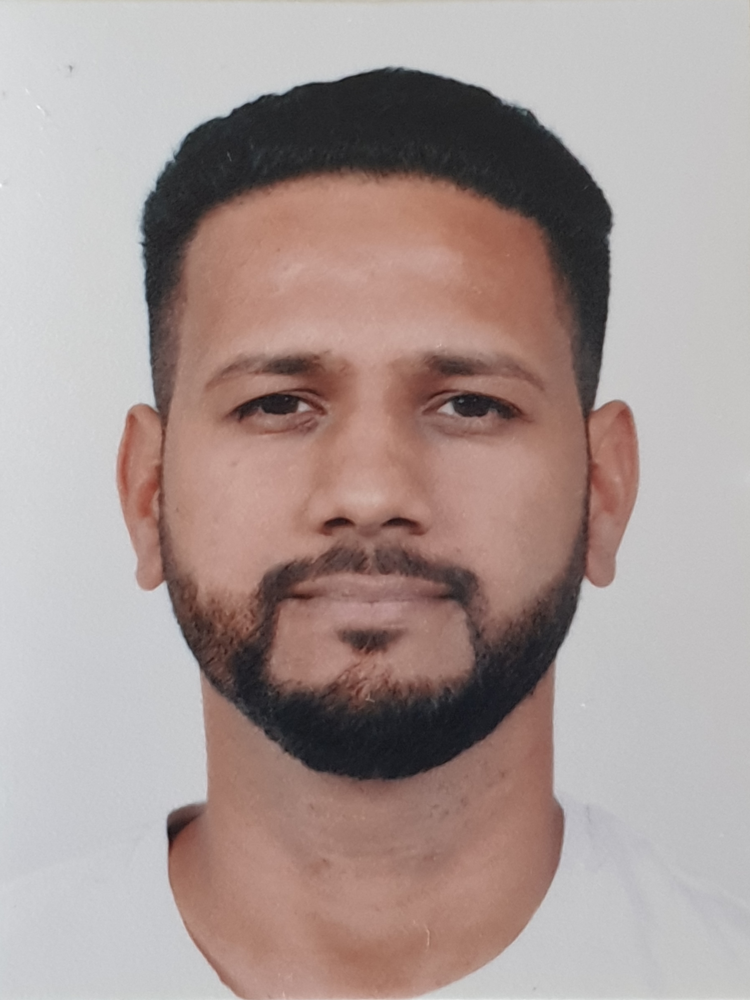

Tarun Nagwal

Career Summary
Established professional with excellent references, I have over a decade of experience in IT industry, the past 4 of which I have personally managed the work of 3 development teams. During that period, I lead the creation, improvement, and maintenance of the products each of my squads were responsible for. My core expertise includes stakeholder collaboration, Roadmap Development and Delivery, Project Execution and Monitoring, Team management, Market research and Design.
I have all the legal rights to work in Bulgaria
Career History
- Senior Product Owner/Product Manager Sportsbook Platform- SportingTech
Jan2023-Present
- Accountable and responsible for managing product roadmap& product development process.
- Accountable and responsible for the vision and strategy of sportsbook platform and ensuring that they are aligned to the business OKR’s.
- Implemented agile methodologies in the organization to streamline the product development lifecycle, reducing time-to-market by 15%.
- Accountable and responsible for researching and developing new product opportunities using data.
- Established and maintained relationships with key stakeholders, including marketing, sales, and development teams, ensuring cross-functional alignment.
- Responsible for setting priorities in collaboration with key stakeholders against planned objectives, in consideration of constraints, dependencies and competing interests, and ensuring that product needs and vision are maintained.
- Accountable and responsible for line management of product owners
- Product Manager/Product Owner Fundingport Platform
Funding port is a financing platform which connects lenders and borrowers for corporate finance, commercial real estate, and renewable energies projects. By bringing all stakeholders into a single, digital solution and automating standard workflows and communications
May 2022-Dec 2022
- Developed the agile process for the entire organization.
- Developed the concept and design of the new self-help tool.
- Managed the full scope of the articles on the self-help tool.
- Ensured the articles fulfill their purpose optimally by gathering detailed requirements from key stakeholders
- Ensured all requirements are met by performing full user acceptance testing with QA team after every main stage of development.
Skills
- Agile Product development
- Marketing research
- Scrum Project Management
- JIRA
- Confluence
- Figma
- Balsamiq
- UAT
Education
BE Computer Science
2007-09 - 2011-07
Delhi Institute of Technology and Management - Sonipat, Haryana
Contact Me